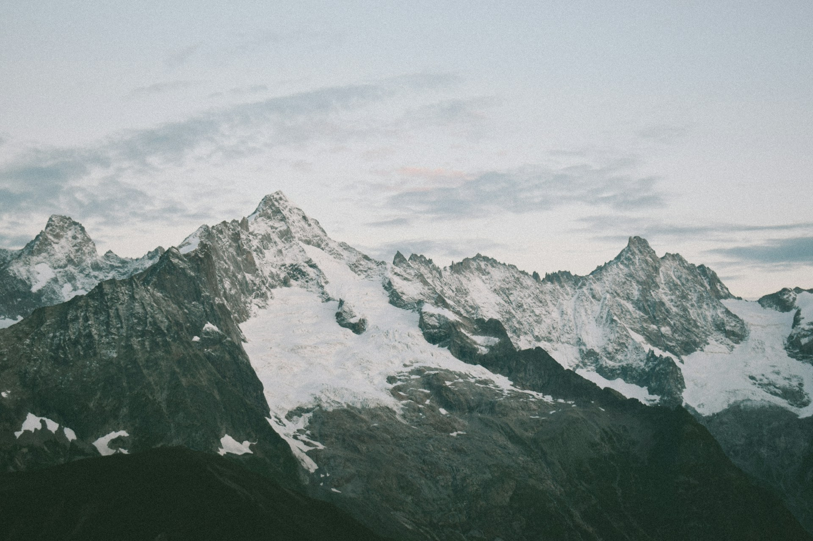

Photo by Jisca Lucia on Unsplash
Photo by Lukasz Szmigiel on Unsplash
Photo by Cord Allman on Unsplash
Photo by Vlad Rudkov on Unsplash
Photo by Parrish Freeman on Unsplash
Photo by Jackson Jost on Unsplash
Photo by NetNutter on Unsplash
Photo by Imkara Visual on Unsplash
Photo by Bradley Hook on Unsplash
Photo by Andrey Zvyagintsev on Unsplash
Photo by Yoghi Kurniawan on Unsplash